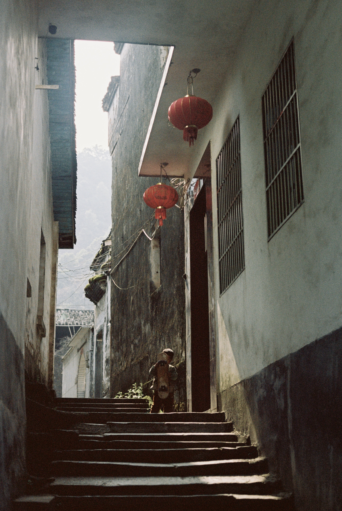
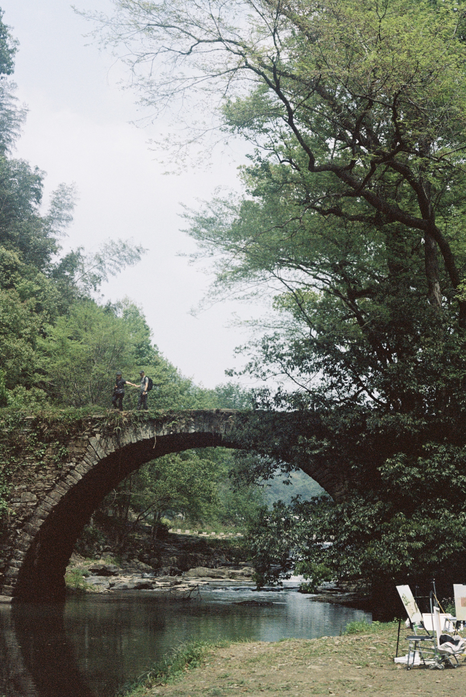

FILM ARCHIVE
INDEX_01 / PORTRA 160 / 2023
INDEX_02 / PORTRA 160 / 2023

INDEX_03 / PORTRA 160 / 2023

INDEX_04 / PORTRA 160 / 2023
INDEX_05 / PORTRA 160 / 2023
DIGITAL ARCHIVE
[ SYSTEM_STATUS: PENDING_UPDATE ]